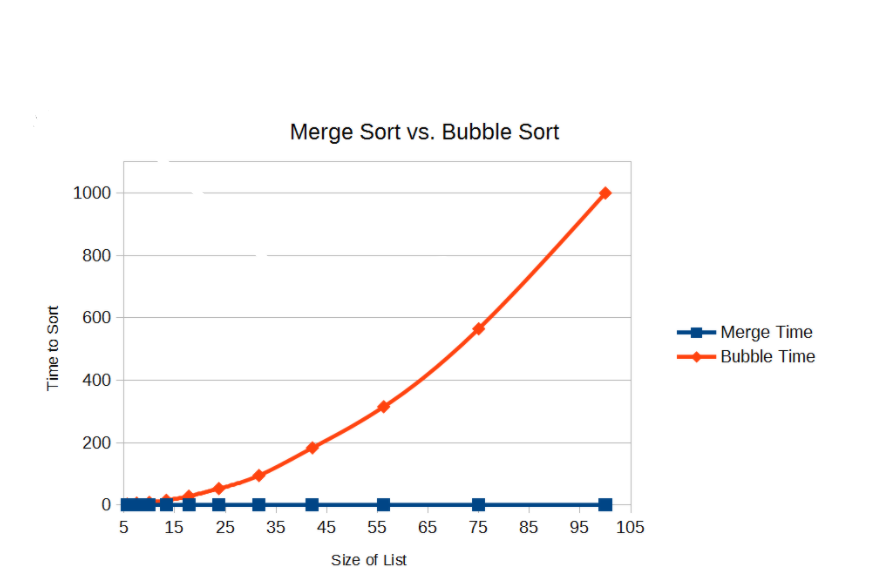

BUBBLE SORT

Bubble sort process:
- Look at the first 2 items in your unordered list.
- If they are in the correct order, do not do anything. If not, swap the items.
- Move on to the next pair of items (2nd and 3rd items) and repeat step 2
- Complete one pass by repeating step 3 until you have gone through the whole list.
- At this point, the last item will be in the correct place so it can be disregarded in the next passess.
- Repeat this whole process until there are no more swaps in the pass
Key characteristics:
- Each pass will have one less comparision than the previous pass because the last item will be in the correct place.
- The simplest sorting algorithm
DIFFERENCES
- Bubble sorts are simple compared to merge sorts so they can be easily implemented on a computer
- Bubble sorts are more efficient to checking if a list is already in order because it only requires one pass whereas a merge sort will go though the whole merge and splitting process.
- A bubble sort uses less memory than a merge sort because all of the sorting is happening on the original list. Whereas, a merge sort makes numerous lists to sort the original list.
- Bubble sorts are quite inefficient compared to a merge sort therefore, it is pretty slow especially for larger lists.
MERGE SORT

Merge sort process:
- The main list will be split into 2 sub-lists
- Repeat step 1 until each sub-list only contains one item
- Merge pairs of sub-lists until each sub-list is a pair of items.
- Each time you merge a sub-list, sort the items in each sub-list so they are in the correct order.
- Repeat steps 3 and 4 until all of the sublists have been merged.
Key characteristics:
- With merge sorts, smaller list are easier to sort than lager ones
- It is easier to carry out a merge sort on 2 ordered lists than unordered.